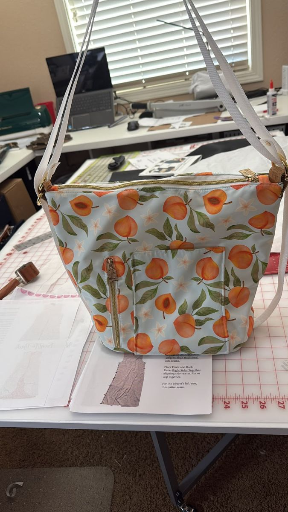

A few sentences about the project, material time and pattern used.
Materials
- pattern used
- how much fabric
- Hardware needed
Steps
- cutting the fabric
- sewing the fabric
- finishing the edges
- adding the hardware
- adding the straps
This is the first step of the project.
I used an industrial sewing machine to sew the fabric.
I used a serger to finish the edges.
I used a zipper and D rings.
I used a strap and D rings to add the straps.

This is a description of the Krystal Convertible Bag.